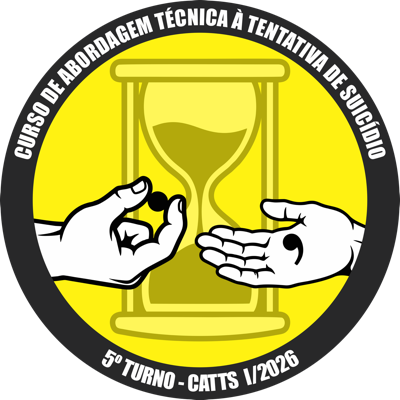

Entrar
Acesso restrito aos alunos liberados individualmente pelo instrutor. Se seu e-mail ainda não foi liberado, solicite ao instrutor do curso.
Termo de Consentimento e Responsabilidade
1. Natureza da ferramenta. O TSE — Treinamento Sucessores de Élpis é um exercício fictício de treino de comunicação para a Abordagem Técnica a Tentativa de Suicídio (CATTS 2026, CBMERJ). As ocorrências, personagens e diálogos são inteiramente gerados por inteligência artificial para fins didáticos. Esta ferramenta NÃO é doutrina oficial, NÃO substitui instrutores, protocolos operacionais vigentes, supervisão presencial, atendimento clínico ou psiquiátrico, e a nota exibida é uma estimativa didática, não a nota oficial do curso.
2. Conteúdo sensível. O tema tratado é grave e pode ser emocionalmente desgastante. Se em algum momento você sentir sofrimento genuíno (não relacionado ao personagem fictício), interrompa o uso e procure apoio — Centro de Valorização da Vida (CVV): 188, ligação e chat gratuitos, 24h, cvv.org.br.
3. Confidencialidade e uso restrito. O acesso a esta ferramenta é pessoal e intransferível, liberado individualmente pelo instrutor. Ao aceitar este termo, você concorda em:
- Não compartilhar seu acesso, link ou credenciais com terceiros;
- Não divulgar, reproduzir ou distribuir esta ferramenta, seu conteúdo ou seus materiais de apoio sem autorização expressa do instrutor;
- Utilizar a ferramenta exclusivamente para fins de treino pessoal no âmbito do curso CATTS 2026.
4. Dados armazenados. Nome, matrícula, e-mail e o histórico de notas/resultados de suas simulações são armazenados para fins de acompanhamento pedagógico do curso e cálculo de ranking. O descumprimento deste termo pode levar à revogação do seu acesso.
5. Microfone. Esta ferramenta pede acesso ao microfone do seu aparelho para você poder falar com o tentante em voz, como num treino real. O áudio é enviado ao servidor só para transcrição/resposta da simulação e não é usado para nenhum outro fim.
Nova ocorrência
O perfil do tentante (agressivo, depressivo ou psicótico) é sorteado automaticamente e só será revelado na avaliação final.
Ocorrência em andamento
Avaliação da abordagem
Ranking
Painel do Instrutor
Liberar acesso
Casos reais (uso interno)
O relato completo fica só neste painel. A "lição resumida" (já anonimizada por você) pode ser usada pela IA para melhorar futuras simulações, se marcada como ativa.
Histórico de conversas (só você vê)
Todas as abordagens finalizadas ficam registradas aqui — diálogo completo, pra você revisar e ajustar a doutrina com base no uso real.